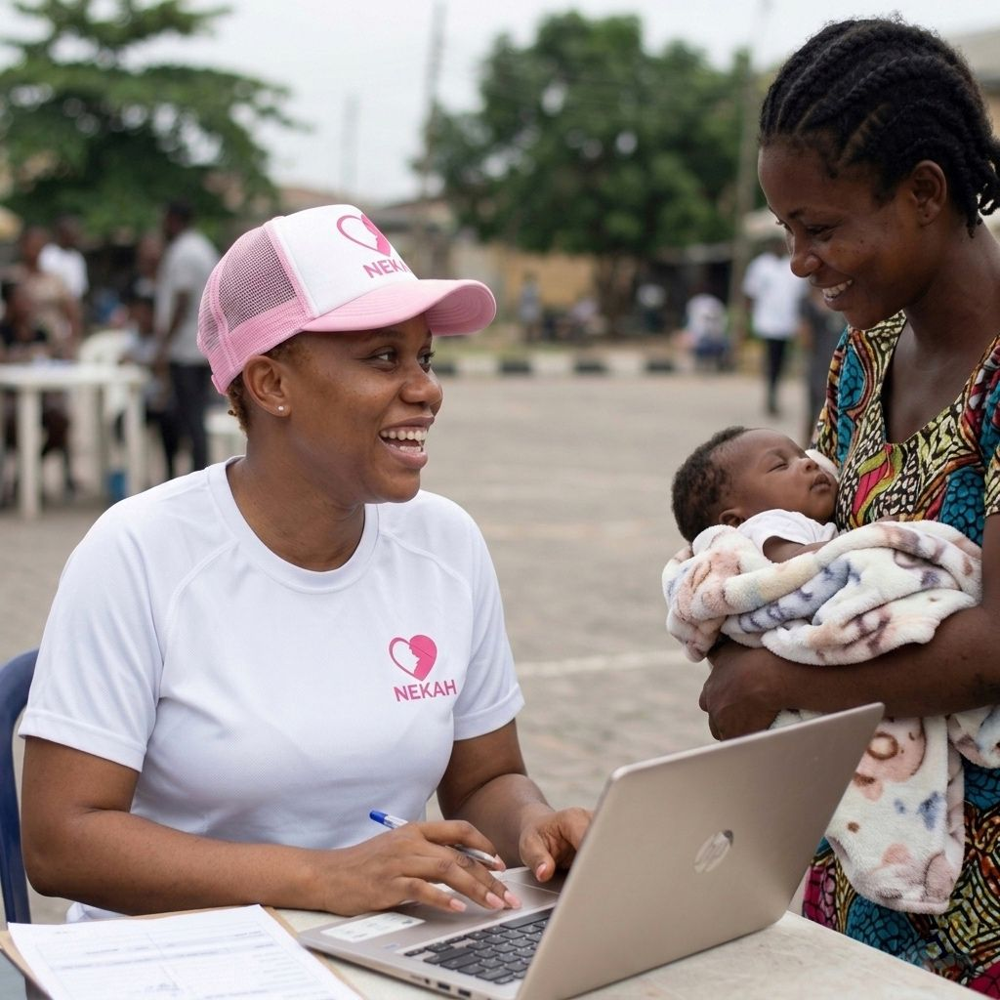
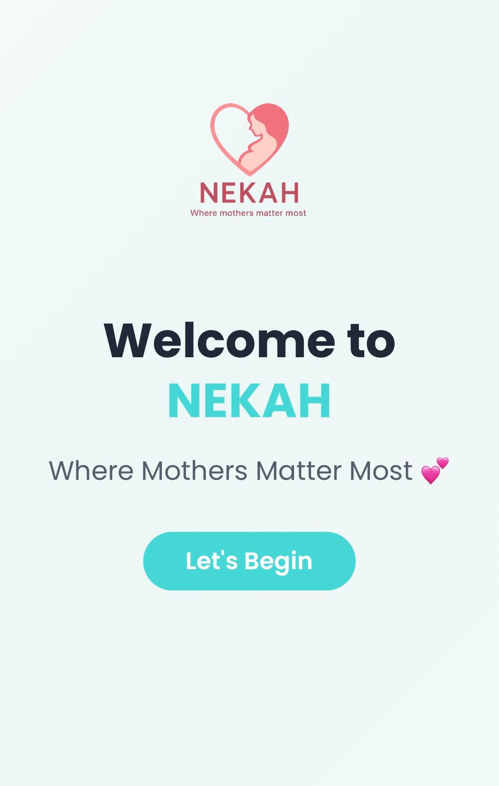
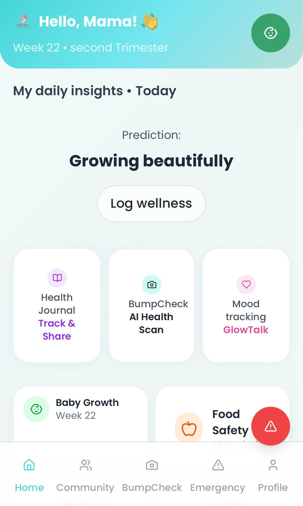
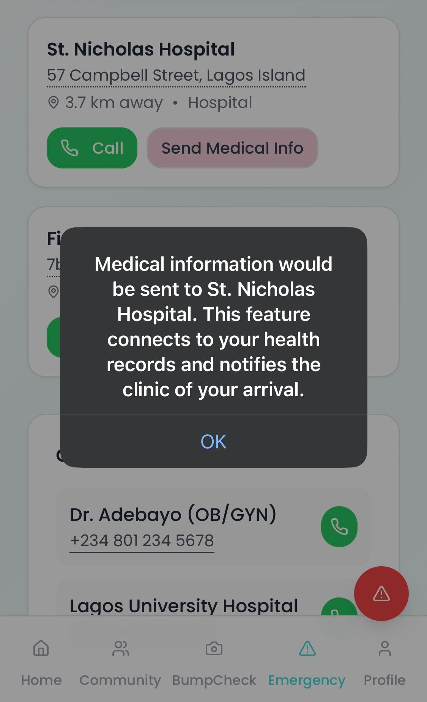
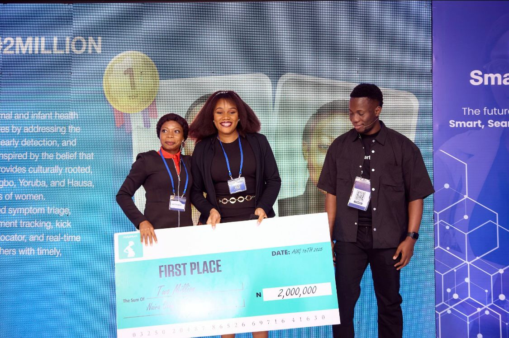
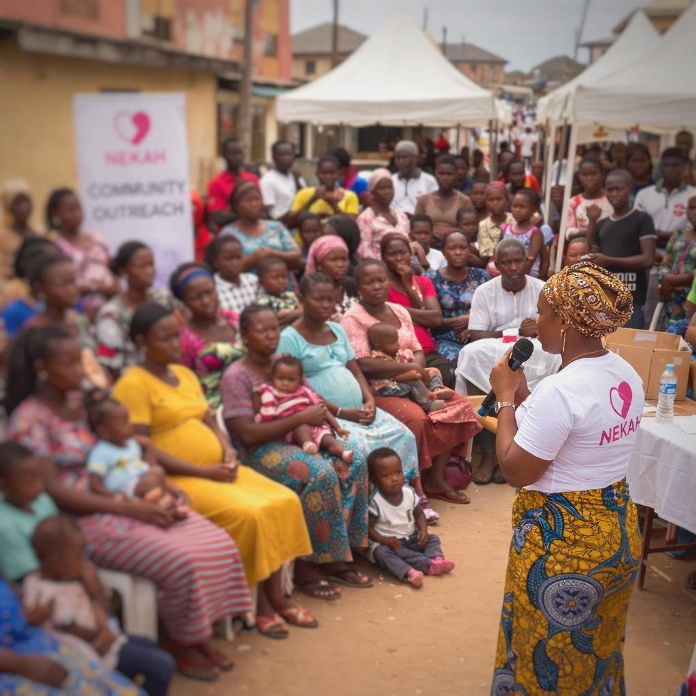
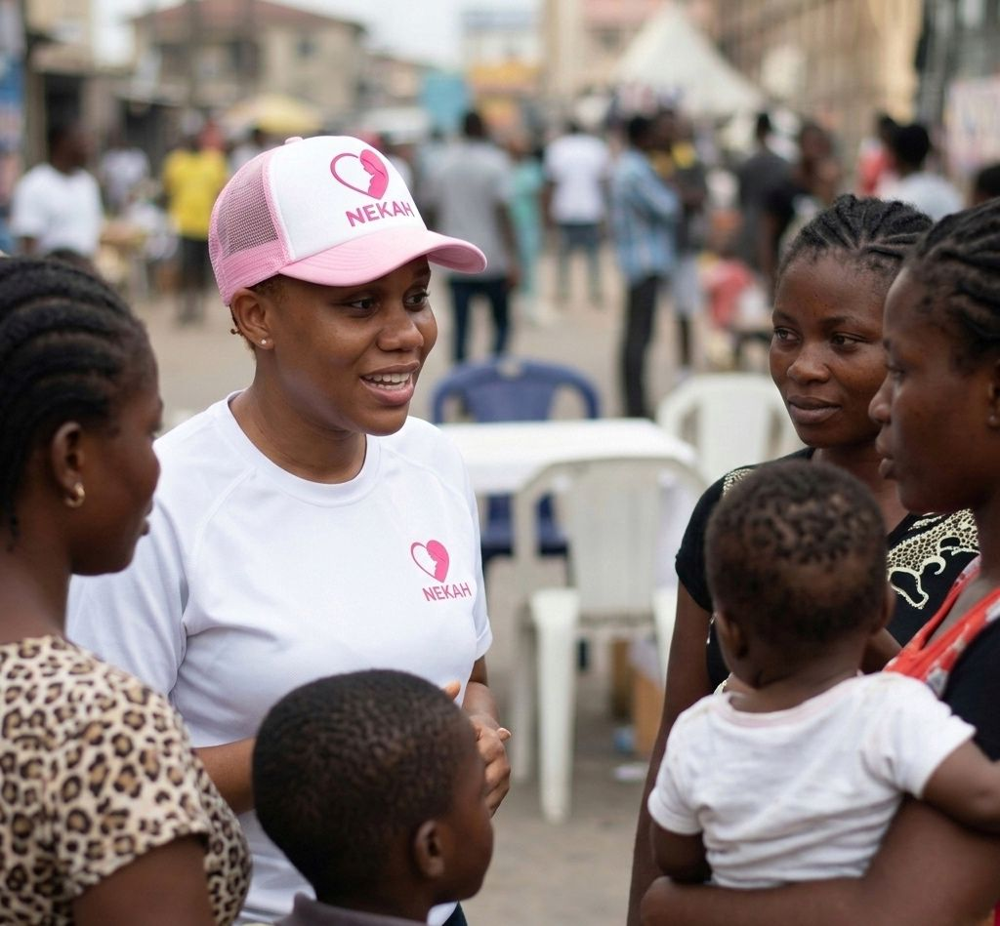
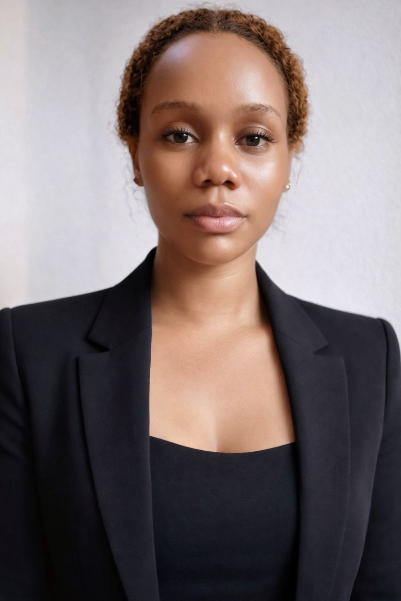

NEKAH is an intelligent maternal and infant health ecosystem designed to help mothers move through pregnancy and early motherhood with more confidence, earlier risk awareness, stronger emotional support, and better connections to care.
It is built for the realities many women face, especially in underserved communities where warning signs are often missed, emotional support is limited, and healthcare access may come too late.
🏆 Winner — HelpMum CareCode Hackathon 2025

From emotional support to symptom awareness and emergency routing, NEKAH is being designed to stand beside mothers before fear becomes crisis and before delays become danger.
Maternal and newborn outcomes are still deeply affected by delayed symptom recognition, fragmented support systems, and preventable gaps between mothers and the care they need.
Many mothers do not always know whether a symptom is normal, whether it is urgent, or when they should seek medical help. In low-resource environments, this delay can mean preventable complications become dangerous before support is reached.
Pregnancy and postpartum experiences can be physically, mentally, and emotionally overwhelming. Yet many women face them without continuous guidance, reassurance, or emotionally intelligent support that helps them feel seen and safe.
Even when a mother senses that something is wrong, she may not know where to go, which facility can help, or how quickly she should act. Weak coordination between mothers and providers can lead to critical delays in care.
Maternal health challenges do not affect women alone. They affect newborn outcomes, family wellbeing, and entire communities. When a mother is unsupported, the health and future of her baby can also be placed at risk.
NEKAH is designed as more than an app. It is a maternal health ecosystem built to help mothers understand what is happening in their bodies, receive compassionate emotional support, identify risks earlier, and reach the right care faster.
An emotionally intelligent support system built to speak to mothers with warmth, compassion, and guidance.
Tools designed to help mothers notice symptoms earlier and understand when medical attention may be needed.
Designed to strengthen communication between mothers and healthcare providers for faster, more informed care decisions.
Focused on emotional support, reassurance, postpartum wellbeing, and confidence-building through motherhood.
ECIS is NEKAH’s emergency response and triage vision. It is designed to help mothers respond faster when danger signs appear by guiding them through urgent maternal health situations, helping determine the seriousness of symptoms, and supporting care routing when emergency help is needed.
The goal of ECIS is to reduce hesitation, confusion, and dangerous delays by making emergency maternal care decisions clearer, faster, and more informed.
BumpCheck is NEKAH’s early health awareness feature built to help mothers pay closer attention to symptoms, body changes, and possible warning signs during pregnancy and early motherhood.
It is designed to help mothers understand what may be harmless, what may need closer monitoring, and what may require professional care, turning uncertainty into earlier action.
Talk to Nneka is NEKAH’s emotionally intelligent maternal AI companion. It is designed to do more than answer questions. It is meant to listen, reassure, support emotional wellbeing, respond to vulnerable moments with compassion, and help mothers feel less alone.
For mothers facing anxiety, insecurity, overwhelm, or postpartum emotional struggles, Nneka is envisioned as a trusted digital companion that offers warmth, awareness, and guidance while encouraging professional help when needed.
NEKAH is being built as an intelligent maternal health platform that combines emotional support, pregnancy guidance, symptom awareness, and care-oriented features in one nurturing experience.

A maternal AI companion that speaks with warmth, emotional intelligence, and support through difficult moments.

Helping mothers notice body changes, follow progress, and better understand when something may need attention.

Built to support early recognition, clearer action, and better emergency response pathways when symptoms become urgent.
NEKAH is designed to help mothers feel more informed, more supported, and more empowered to act earlier, because healthier maternal journeys lead to healthier beginnings for babies.
By combining intelligent technology with maternal health awareness, NEKAH aims to reduce preventable complications during pregnancy and postpartum care while improving emotional wellbeing, health confidence, and decision-making for mothers.
NEKAH is especially relevant for mothers in underserved communities, first-time mothers, adolescents and young mothers, and women who need earlier guidance, clearer pathways to care, and stronger emotional support systems.
NEKAH is not only a product vision. It is already being shaped through innovation recognition, grassroots engagement, maternal health awareness work, and conversations with communities and care providers.

NEKAH won First Place at the 2025 HelpMum CareCode Hackathon, receiving a ₦2,000,000 innovation grant and mentorship support in recognition of its promise as a maternal health solution.

The NEKAH team actively engages communities, speaking with mothers, families, and health workers to spread awareness, understand real needs, and shape the platform around lived maternal experiences.

Through outreach and enlightenment efforts, NEKAH is helping deepen awareness around pregnancy risks, emotional wellbeing, timely care-seeking, and the need for stronger support systems for mothers.
NEKAH is being built by a founder whose vision sits at the intersection of compassion, lived understanding, innovation, and a deep commitment to maternal wellbeing.

Francisca-Gina Anurika Umoh is the founder of NEKAH and NekahLumina Ventures. She created NEKAH after identifying painful gaps in maternal healthcare support, especially around early symptom recognition, emergency response, emotional support, and the silence many mothers carry through pregnancy and postpartum life.
Her vision for NEKAH is not simply to create another health app. It is to build a compassionate maternal health ecosystem that mothers can trust, one that informs, reassures, supports, and helps connect them to care before preventable risks become tragedy.
In 2025, Francisca led NEKAH to win First Place in the HelpMum CareCode Hackathon, where the project received recognition as an innovative maternal health solution and was awarded a ₦2,000,000 grant together with mentorship support.
Today, she continues to shape NEKAH as a mission-driven innovation built to support mothers, protect babies, and strengthen maternal healthcare journeys across underserved communities.
For partnerships, collaboration, maternal health conversations, pilot opportunities, and innovation support, reach out below.